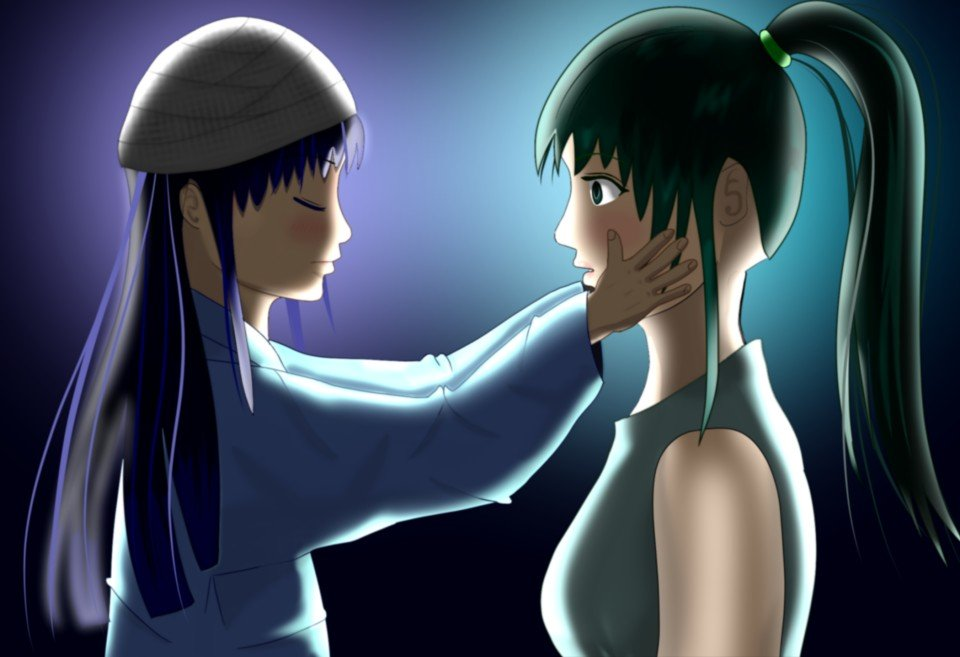
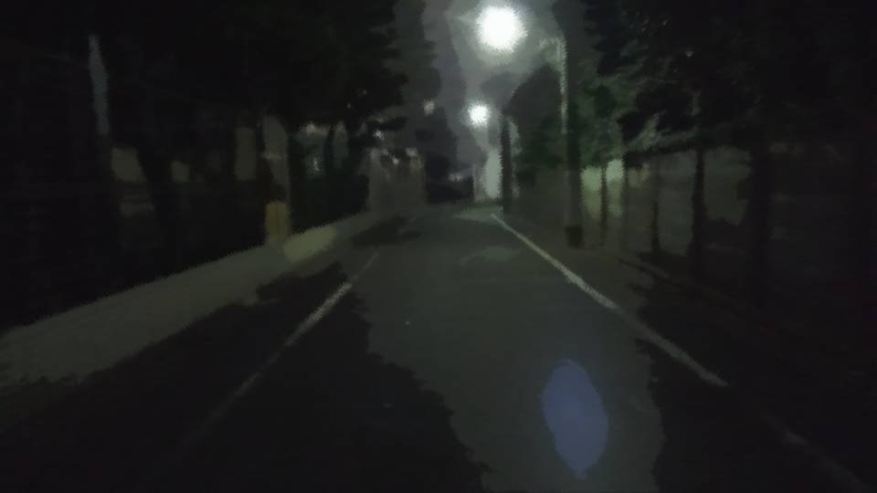
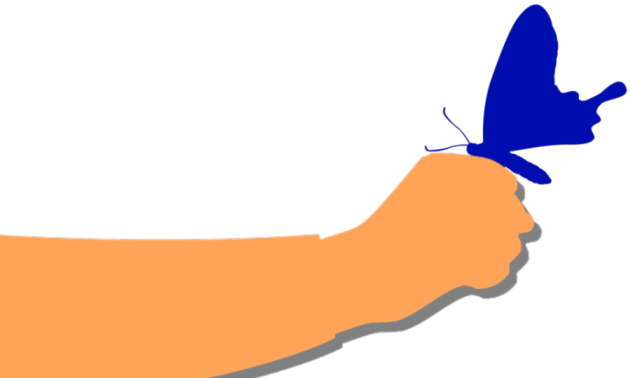

詫言
――時刻は0時を過ぎた。

俺たちは消毒液臭い部屋にこもっていた。
病室のベッドには、春花ちゃんが横たわっている。
なつみは病室の椅子で眠っている。
病室のベッドには、春花ちゃんが横たわっている。
なつみは病室の椅子で眠っている。


「春花ちゃん、大丈夫よね……？」
「致命傷ではないそうだ。 多分、春花ちゃんが間に入ったことで、美冬さんもギリギリで手を止めようとしたんだろう」
美冬さんは病室ではなく、ずっと廊下にいる。
「致命傷ではないそうだ。 多分、春花ちゃんが間に入ったことで、美冬さんもギリギリで手を止めようとしたんだろう」
美冬さんは病室ではなく、ずっと廊下にいる。
俺が茜を止めたのは正しかったのだろうか。
なつみの言葉があの時、急に浮かんだ。
邪魔をしてはならないというのは、このことだったのではないか。
そう思って、身体が勝手に動いてしまった。
なつみの言葉があの時、急に浮かんだ。
邪魔をしてはならないというのは、このことだったのではないか。
そう思って、身体が勝手に動いてしまった。
「ん……
ここは……？」
「春花ちゃん、聞こえるか？ 見えるか？」
春花ちゃんはゆっくりとうなずく。
「春花ちゃん、聞こえるか？ 見えるか？」
春花ちゃんはゆっくりとうなずく。
「なつみ……
は……？」
「なつみは大丈夫だ。怪我してない」
「よかった……」
春花ちゃんはつらそうな表情のまま笑顔を見せる。
「なつみは大丈夫だ。怪我してない」
「よかった……」
春花ちゃんはつらそうな表情のまま笑顔を見せる。
「お母さんは……？」
「よし、今呼んでくる！ 茜は先生を呼んでくれ！」
俺は病室を飛び出し、美冬さんのいる廊下の椅子へ走った。
「よし、今呼んでくる！ 茜は先生を呼んでくれ！」
俺は病室を飛び出し、美冬さんのいる廊下の椅子へ走った。

――すでに廊下の明かりは消されていた。
春花ちゃんの病室から少し離れた場所で、人影がうつむいて座っている。
春花ちゃんの病室から少し離れた場所で、人影がうつむいて座っている。

美冬さんは姿勢を崩さず、魂が抜けたように顔をうつむけている。
「美冬さん、春花ちゃんの意識が戻った！ ちゃんと見えてるし、話もできる！」
しかし、美冬さんは微動だにしない。
「私……何やってたんだろう……。 ただ……春花を助けたかっただけなのに……」
「美冬さん、春花ちゃんの意識が戻った！ ちゃんと見えてるし、話もできる！」
しかし、美冬さんは微動だにしない。
「私……何やってたんだろう……。 ただ……春花を助けたかっただけなのに……」
「もう済んだことなんだ。それよりも、早く春花ちゃんに……！」
「良治さんは……私を責めないの？ なつみちゃんを本気で殺そうとして…… あなたたちの実の娘である春花をあんな目に……」
「そりゃ…… そりゃ、怒りが全然ないとは言わない。 でも今はそんなことより、春花ちゃんを少しでも元気にさせてあげるべきだ。 そのためには美冬さんが……」
「良治さんは……私を責めないの？ なつみちゃんを本気で殺そうとして…… あなたたちの実の娘である春花をあんな目に……」
「そりゃ…… そりゃ、怒りが全然ないとは言わない。 でも今はそんなことより、春花ちゃんを少しでも元気にさせてあげるべきだ。 そのためには美冬さんが……」
「どんな顔をして会えって言うの？
春花は私に殺されそうになった。
どんな顔をして……」
「しかし……！ 春花ちゃんは美冬さんに会いたがっているぞ！」
「しかし……！ 春花ちゃんは美冬さんに会いたがっているぞ！」
「お願い……もう少し1人にして……。
今、怖くて春花に顔を見せられない……。
春花に嫌われたら……
もう私、もう生きられない……」
「分かった……」
美冬さんを残して、病室へ向かった。
美冬さんの心もかなり動いている。
あと何か……何かあれば……。
「分かった……」
美冬さんを残して、病室へ向かった。
美冬さんの心もかなり動いている。
あと何か……何かあれば……。

病室では、春花ちゃんがベッドに腰掛け、先生の問診を受けていた。
なつみはまだ眠ったままだ。
「大丈夫です。脳にも骨にも異常はありません」
「そうですか、ありがとうございます」
なつみはまだ眠ったままだ。
「大丈夫です。脳にも骨にも異常はありません」
「そうですか、ありがとうございます」
「ええっと、お父さんですか？」
「あの、私は……」
「私のお父さん、死んじゃったんです。 なつみが飛ばした風船を取ろうとして、木から落っこちちゃって……」
「あの、私は……」
「私のお父さん、死んじゃったんです。 なつみが飛ばした風船を取ろうとして、木から落っこちちゃって……」
「春花ちゃん、痛くないか？ 大丈夫か？」
「うん！ ちょっと痛いけどもう大丈夫！ あとは……お母さんが……」
「…………」
俺と春花ちゃんの間に、固い空気が漂う。
「うん！ ちょっと痛いけどもう大丈夫！ あとは……お母さんが……」
「…………」
俺と春花ちゃんの間に、固い空気が漂う。

「あ、あの、では私はこれで」
先生はその空気を避けるかのように、病室から出て行った。
が、
そのドアの横には、なつみが立っていた。
先生はその空気を避けるかのように、病室から出て行った。
が、
そのドアの横には、なつみが立っていた。
「ねえ……
春花ちゃんのお父さんって死んだの？」
しまった……！ 聞かれていたのか！
しまった……！ 聞かれていたのか！
「私のせいで、死んじゃったの……？」
「なつみ、お父さんが死んだのは事故だよ。 なつみのせいじゃ――」
春花ちゃんがそこまで言うと、なつみは病室から飛び出していった。
「なつみ、お父さんが死んだのは事故だよ。 なつみのせいじゃ――」
春花ちゃんがそこまで言うと、なつみは病室から飛び出していった。
「なつみ！」
俺はなつみの後を追いかけた。
ちくしょう！ こんな時に栄一郎の話を聞いたら、ああなるに決まってる！
すぐになつみに言って聞かせないと！ お前は悪くないと！
俺はなつみの後を追いかけた。
ちくしょう！ こんな時に栄一郎の話を聞いたら、ああなるに決まってる！
すぐになつみに言って聞かせないと！ お前は悪くないと！
どこだ……？ なつみはどこへ……！？
――たどり着いたのは、さっき美冬さんがいた廊下。

そこには、美冬さんとなつみの姿があった。
息を切らしているなつみのそばで、美冬さんは相変わらず無表情のまま、なつみの顔をぼーっと見ていた。
息を切らしているなつみのそばで、美冬さんは相変わらず無表情のまま、なつみの顔をぼーっと見ていた。
「どうしたのよ……」
「あの…… あの……！ ごめんなさい！」
なつみは頭を下げた。
美冬さんの無表情は、驚いた顔に変わった。
「私のせいで、おじちゃん死んだんだよね？」
「え……？」
「あの…… あの……！ ごめんなさい！」
なつみは頭を下げた。
美冬さんの無表情は、驚いた顔に変わった。
「私のせいで、おじちゃん死んだんだよね？」
「え……？」
「だから、ごめんなさい！」
「何言ってるのよ……。 今更そんなこと言ったって春花が救われるわけじゃない……」
「私……おじちゃんの声が聞こえたの！ 春花ちゃんを助けてあげてって！」
「栄一郎さんが……？」
「何言ってるのよ……。 今更そんなこと言ったって春花が救われるわけじゃない……」
「私……おじちゃんの声が聞こえたの！ 春花ちゃんを助けてあげてって！」
「栄一郎さんが……？」
「でも……
春花ちゃんを助けるには、おばちゃんも元気にならないとダメだよね？」
「何よ…… なつみちゃんに何ができるって言うのよ……。 栄一郎さんが死んで、私たちがどれだけ苦しんだか……」
「何よ…… なつみちゃんに何ができるって言うのよ……。 栄一郎さんが死んで、私たちがどれだけ苦しんだか……」
冷たい言葉しか返さない美冬さんに何か言ってやりたかった。
しかし、それではなつみの詫言の邪魔になってしまう気がした。
しかし、それではなつみの詫言の邪魔になってしまう気がした。

「私……
私も春花ちゃんと同じ学校に行く！ そしたら春花ちゃんを助けられるの！
そしたら、おばちゃんも元気になれるでしょ！？」
「本気で言ってるの？ なつみちゃんのお父さんたちがダメって言ったらどうするのよ……」
「春花ちゃんがそれで元気になれるって言ったら、おばちゃんもお父さんたちに言って！ 私、春花ちゃんのそばにずっといる！」
「本気で言ってるの？ なつみちゃんのお父さんたちがダメって言ったらどうするのよ……」
「春花ちゃんがそれで元気になれるって言ったら、おばちゃんもお父さんたちに言って！ 私、春花ちゃんのそばにずっといる！」
「どうしてそこまでして……」
「だって…… 春花ちゃんは……おばちゃんは…… 私のせいで…… ううぐ……ごめんなさい！」
「だって…… 春花ちゃんは……おばちゃんは…… 私のせいで…… ううぐ……ごめんなさい！」
「もう……勝手にしなさいよ……。
でもまたなつみちゃんに何かしてしまうかもしれないわよ……」
「おばちゃんはもうそんなこと絶対しない！ だって、そうなったら春花ちゃんがかわいそうだもん！ 春花ちゃんは優しいおばちゃんが大好きだもん！ おばちゃんはもう春花ちゃんが嫌がることしないもん！ だって、おばちゃんも春花ちゃんのこと大好きだもん！」
「おばちゃんはもうそんなこと絶対しない！ だって、そうなったら春花ちゃんがかわいそうだもん！ 春花ちゃんは優しいおばちゃんが大好きだもん！ おばちゃんはもう春花ちゃんが嫌がることしないもん！ だって、おばちゃんも春花ちゃんのこと大好きだもん！」
「何なのよ……！
今更なつみちゃんに……
私に何ができるって言うのよ……！
うう……栄一郎さん……！」

「お母さん！」
春花ちゃんが茜に支えられながら歩いてきたようだ。
「私も…… ごめんなさい！」
美冬さんの前で、春花ちゃんも頭を下げた。
春花ちゃんが茜に支えられながら歩いてきたようだ。
「私も…… ごめんなさい！」
美冬さんの前で、春花ちゃんも頭を下げた。
「私がいじめられたから、紙人形の呪いで何とかしようだなんて……
ダメだよね……。
それでお母さんが死神になるなら……
私、もう呪いなんていらない！
だから……
だから、もとのお母さんに戻って！」
「春花まで……。 何言ってるのよ春花、私は春花のために……！ 春花をいじめるクラスメイトを殺してほしくて、助けてほしいから死神を呼んだんでしょ！？」
「春花まで……。 何言ってるのよ春花、私は春花のために……！ 春花をいじめるクラスメイトを殺してほしくて、助けてほしいから死神を呼んだんでしょ！？」

「違う！
違う！ 違う！ 違う！」
「そうじゃない！ そうじゃないの！ お母さん何も分かってない！
だって……私がいじめられてたら、お母さん元気になれないじゃない！
私はお母さんに死神になってほしかったんじゃないの！
私がいじめられてたら、きっとお母さん元気になれない！
だから……
お母さんに元気になってほしくて……
お母さんに元気になってほしいから……！」
「どうして……お母さんは元気よ？」
「じゃあいつになったら元木町に帰れるの！？ お母さん、元木町のこと大好きだったのに、ずっと元木町に戻ろうとしてくれない！ お父さんが死んで心の病気になったから元木町に戻れないんでしょ！？」
「じゃあいつになったら元木町に帰れるの！？ お母さん、元木町のこと大好きだったのに、ずっと元木町に戻ろうとしてくれない！ お父さんが死んで心の病気になったから元木町に戻れないんでしょ！？」
「春花、でも、いじめっ子が死んだら春花が元気になれるでしょ？」
「私が元気になったって意味ないじゃない！ 私は元木町に戻りたいの！ お母さんと一緒に元木町に帰りたいの！ なつみがいる元木町に！ お母さんが元気にならなきゃ何の意味もないの！」
「私が元気になったって意味ないじゃない！ 私は元木町に戻りたいの！ お母さんと一緒に元木町に帰りたいの！ なつみがいる元木町に！ お母さんが元気にならなきゃ何の意味もないの！」
「何なのよこれ……
私……
いったい何のために……！」
「私、お母さんに元気になってほしいだけ。 でも……ごめんなさいお母さん……。 私は……お母さんに、死神になる呪いをかけちゃったみたい。 私、お母さんが元通り元気になるなら、いじめられたって学校で独りぼっちだって、全然怖くない。 それくらい、いくらでも我慢できるよ」
「私、お母さんに元気になってほしいだけ。 でも……ごめんなさいお母さん……。 私は……お母さんに、死神になる呪いをかけちゃったみたい。 私、お母さんが元通り元気になるなら、いじめられたって学校で独りぼっちだって、全然怖くない。 それくらい、いくらでも我慢できるよ」
「私、お母さんを死神にしちゃった。
お母さん、聞いて。
今度はね、呪いじゃなくてね、お母さんが元気になれるおまじないをするから」
「元気になるおまじない……？」
「うん、呪いじゃなくて、天使様のおまじない」
「元気になるおまじない……？」
「うん、呪いじゃなくて、天使様のおまじない」

「お母さんの中の死神さん、私たちの天使さん、どうかお母さんを助けて下さい。
お母さんを……
元気にしてください。
私、お母さんが元気になるなら、どんなことでも我慢します」
「…………」
「今のが、お母さんが元気になれるおまじない。 死神の呪いからお母さんを助けるおまじない。 どう？ お母さん、もう、死神じゃないでしょ？ もう…… 誰も殺したとか思わないよね？ ごめんなさい、お母さんを死神にしたのは私なの。 私はもう、呪いなんて使わないから。 お父さんは死んじゃったけど、みんながいれば、何も怖くないから」
「今のが、お母さんが元気になれるおまじない。 死神の呪いからお母さんを助けるおまじない。 どう？ お母さん、もう、死神じゃないでしょ？ もう…… 誰も殺したとか思わないよね？ ごめんなさい、お母さんを死神にしたのは私なの。 私はもう、呪いなんて使わないから。 お父さんは死んじゃったけど、みんながいれば、何も怖くないから」
「何で春花が謝るのよ……！
春花に黒魔術の本を渡したの、私なのに……！
私が春花をけしかけたのに……！
春花……
私は……
私は春花を魔女にしようとしたの。
死神を呼ぶ魔女にしようとしたのは、私なの。
だから……
春花は悪くないの。全部、私が悪いの。
茜……こんな私、元木町に戻れるわけない……！
こんなことして戻っていいわけないじゃない！」
「美冬……
私も……ごめんね……」
「何でよ、何で茜まで謝るのよ……！」
「何でも助けてあげるからって言っておきながら、ずっと美冬を見放してた。 本当に助けたいなら、なんとしてでも美冬を探すべきだった……。 美冬がこんなになるまで放っておいたなんて……」
「何でよ、何で茜まで謝るのよ……！」
「何でも助けてあげるからって言っておきながら、ずっと美冬を見放してた。 本当に助けたいなら、なんとしてでも美冬を探すべきだった……。 美冬がこんなになるまで放っておいたなんて……」
「うぎゅ……！
茜まで……！
悪いの……全部私なのに……！」
「美冬……
あんたは昔から……
甘えん坊で、うじうじしてて、それでいて極端で……
誰よりも家族に憧れていた。
そのせいで、無理しすぎるの。
だから今度こそ、私を頼って。
あんたの敵は誰1人いないの。みんな、美冬を助けてくれるから。
だから……
元木町に帰ろう？
もう絶対に美冬を見捨てないから。
やっぱり私、美冬がいない生活なんて、いやよ」
「ダメよ！ みんなをこんなことに巻き込んでおいて、戻れるわけないじゃない……！
でも……
うぎゅ……
だけど……
うぎゅ……！」
「だけど、何なの？ 自分がどうしたいかくらい、自分で言えるでしょ？ 美冬だってもう、立派なお母さんなんだから」
「私ね、やっと分かったの。お母さんを笑顔にする方法が。 私が悲しんでる時、お母さんもすごく悲しそうなの」
「だけど、何なの？ 自分がどうしたいかくらい、自分で言えるでしょ？ 美冬だってもう、立派なお母さんなんだから」
「私ね、やっと分かったの。お母さんを笑顔にする方法が。 私が悲しんでる時、お母さんもすごく悲しそうなの」


もし私が元気な姿を見せたら、栄一郎さんも元気になれるだろうか。
もし私が悲しむ姿を見せたら、栄一郎さんも一緒に悲しむのだろうか。
もし本当に私に似ているなら、楽しいことも悲しいことも、分かち合えるのではないか。
もし私が悲しむ姿を見せたら、栄一郎さんも一緒に悲しむのだろうか。
もし本当に私に似ているなら、楽しいことも悲しいことも、分かち合えるのではないか。
「だからね、お母さんを笑顔にするには、私が笑顔になればいいの。
私、なつみのそばだったらずっと笑顔でいられるよ」

「だから……！
美冬さんを笑顔にするためには、まずは僕が笑顔にならないと……！
もし美冬さんが悲しんでいたら、僕が笑顔になります！
だから……！」
「だからお母さん……一緒に……」
「ほら、春花ちゃんが待ってるわよ？ 美冬はどうしたいの？」
「うぎゅ……！ 私……！ 元木町に…… 元木町に……！ 帰りたい…… 帰りたいよ……！ うぎゅ！ 春花に笑顔になってほしい！ 春花に幸せになってほしい！」
「ほら、春花ちゃんが待ってるわよ？ 美冬はどうしたいの？」
「うぎゅ……！ 私……！ 元木町に…… 元木町に……！ 帰りたい…… 帰りたいよ……！ うぎゅ！ 春花に笑顔になってほしい！ 春花に幸せになってほしい！」
「ふふ……今でもその口癖、治ってないのね……。
もしまた『うぎゅ……』なんて言ったら……
元木町でなつみの面倒全部見てもらうわよ？」
「茜……！？」
「冗談よ。でも、これは美冬のためだけじゃなく、私たちのためにも言ってるの。 私が1番幸せになれる方法を提案してるんだから…… だから、すぐにダメだなんて言わないで。 ちゃんと、ご検討下さい」
「茜……私…… もう一度…… うぎゅ…… もう一度だけ…… 幸せに…… なってもいいのかな……」
「冗談よ。でも、これは美冬のためだけじゃなく、私たちのためにも言ってるの。 私が1番幸せになれる方法を提案してるんだから…… だから、すぐにダメだなんて言わないで。 ちゃんと、ご検討下さい」
「茜……私…… もう一度…… うぎゅ…… もう一度だけ…… 幸せに…… なってもいいのかな……」
「あんたねえ……。そんなことまで私に決めてもらうつもり？
自分が幸せになるかどうかくらい、自分で決められるでしょ？
春花ちゃんが幸せになるためにはどうしたらいいか、なつみが教えてくれたじゃない」

「お母さん、なつみたちのところへ帰ろう？」
「おばちゃんとロシアンたこ焼き食べたい！」
「………… ふふ……何それ……おいしいの？」
「おばちゃんとロシアンたこ焼き食べたい！」
「………… ふふ……何それ……おいしいの？」
「ほら美冬。どうするかここで、自分の言葉ではっきりいいなさいよ」


「春花……
もう一度……幸せになろうか……。
お父さんは死んじゃったけど……
みんながいれば……大丈夫よね？」
「えへへ……やっぱりお母さん、世界一大好き！」

「ええ、栄一郎さんは世界一の旦那様です！」
「美冬ちゃんだって、世界一の奥さんだよ！」
「美冬ちゃんだって、世界一の奥さんだよ！」
「栄一郎さん……
私、やっぱりまだ、幸せをあきらめたくない……！」
「ふふ……私も春花が大好きよ。
私とお父さんの、世界一の娘だわ！」
「私、ようやく気づいた。
自分の幸せをあきらめていたんだ……。
栄一郎さんが死んで、もう幸せになれないって思い込んでいた。
こんなにも支えてくれる人たちがいるのに……。
幸せをつかめるはずだったのに、目を背けていた」
「私、もうあきらめない。もう逃げない。
不幸のままかどうかは私次第。
私が幸せって思えないなら、春花も不幸なまま。
私、元木町で春花と新しい幸せを見つけてみせる。
それが栄一郎さんへ……今私ができることだから。
これ以上栄一郎さんに、恥ずかしい姿を見せられないから」
「ありがとうね、なつみちゃん。栄一郎さんの……
春花のお父さんの声を聞かせてくれて」
4人は互いに見つめ合い、そして互いの存在がいかに大切か、確かめ合っているようだった。
4人は互いに見つめ合い、そして互いの存在がいかに大切か、確かめ合っているようだった。
俺はそっとその場を離れた。
今は邪魔せず、4人に本当の再会を与えるべきだ。
今は邪魔せず、4人に本当の再会を与えるべきだ。

――病院の外は四月初旬の冷たい空気にさらされていた。
しかし風はなく、穏やかですがすがしい満天の星。
大きく息を吐くと、白い息がその空へと吸い込まれていく。
しかし風はなく、穏やかですがすがしい満天の星。
大きく息を吐くと、白い息がその空へと吸い込まれていく。

俺たちが女ケ沢に来たのは正しい選択だった。
そしてなつみを連れてきたことも。
栄一郎、お前のおかげだ。
お前がなつみを通して声を聞かせてくれたから――。
だから、美冬さんに心を取り戻させることができたんだ。
そしてなつみを連れてきたことも。
栄一郎、お前のおかげだ。
お前がなつみを通して声を聞かせてくれたから――。
だから、美冬さんに心を取り戻させることができたんだ。
三回忌に参列できなかったけど、これがお前に対する何よりの供養だよな。
もう、お前が心配することはない。
どうか、安らかに……。
と、病院から2つの小さな人影が出てきた。
もう、お前が心配することはない。
どうか、安らかに……。
と、病院から2つの小さな人影が出てきた。
「お父さん！」
「おじさん！」
「どうした？ 春花ちゃん、あんまり歩き回ったらダメだぞ？」
と、2人は顔を合わせ、くすりと笑う。
「おじさん！」
「どうした？ 春花ちゃん、あんまり歩き回ったらダメだぞ？」
と、2人は顔を合わせ、くすりと笑う。
「なんだ？ どうかしたのか？」
「えへ、お母さんたちの邪魔したらダメだからさ」
「邪魔……？」
「えへ、お母さんたちの邪魔したらダメだからさ」
「邪魔……？」

「ねえ、茜……」
「あら、起きてたの？」
「うん……」
「今日は朝早かったし、荒田を往復したりで、疲れたでしょ？」
「でも、茜がそばにいてくれるなら、大丈夫だよ」
「そう……」
「ねえ、覚えてる？ 子供の時の夏休み。小1の時のこと」
「あら、起きてたの？」
「うん……」
「今日は朝早かったし、荒田を往復したりで、疲れたでしょ？」
「でも、茜がそばにいてくれるなら、大丈夫だよ」
「そう……」
「ねえ、覚えてる？ 子供の時の夏休み。小1の時のこと」
「私たちがちょうちょを追いかけてる時、私、転んで泣いたの」
「覚えてるわ。夕焼けに、私たちよりも背の高いひまわりたち。 2匹のきれいなちょうちょを2人で追いかけて…… その後、私が傷に手を当てたわね」
「あれね、本当は痛かったんじゃなくて、茜に置いていかれるのが嫌で泣いたの」
「覚えてるわ。夕焼けに、私たちよりも背の高いひまわりたち。 2匹のきれいなちょうちょを2人で追いかけて…… その後、私が傷に手を当てたわね」
「あれね、本当は痛かったんじゃなくて、茜に置いていかれるのが嫌で泣いたの」
「分かってる」
「そうなの？」
「あんたは泣き虫だったから、どんなことで泣くかくらい、分かるわよ」
「そっか……」
「そうなの？」
「あんたは泣き虫だったから、どんなことで泣くかくらい、分かるわよ」
「そっか……」
「星がきれい……」
「窓から見えるの？」
「うん、ここからだと見える。 ねえ、あの日、ちょうちょを追いかけた日、別れ際に星空を見たの覚えてる？」
「もちろん、覚えてる。約束も、1つした」
「ほんと？ ほんとにそれも覚えてるの？」
「ずっと、元木町にいようねって」
「窓から見えるの？」
「うん、ここからだと見える。 ねえ、あの日、ちょうちょを追いかけた日、別れ際に星空を見たの覚えてる？」
「もちろん、覚えてる。約束も、1つした」
「ほんと？ ほんとにそれも覚えてるの？」
「ずっと、元木町にいようねって」
「…………
ごめん……」
「ん？」
「私が約束破っちゃったからさ……」
「でも、また戻ってきてくれるんでしょ？」
「うん……」
「だったらそれで十分よ」
「ん？」
「私が約束破っちゃったからさ……」
「でも、また戻ってきてくれるんでしょ？」
「うん……」
「だったらそれで十分よ」
「ねえ、茜……」
「ん？」
「ありがとう、助けに来てくれて」
「2年も遅れて、ごめんね」
「ふふ、茜、ありがとう……。やっぱり私たち、親友だよ」
「これからもずっと、ね……」
「ん？」
「ありがとう、助けに来てくれて」
「2年も遅れて、ごめんね」
「ふふ、茜、ありがとう……。やっぱり私たち、親友だよ」
「これからもずっと、ね……」
「ねえねえなつみ！ 元木町に戻ったらなつみの家の近くに住みたい！」
「あ！ この前、お隣さん引っ越したんだよ！ 今、そこ空いてる！」
「あ！ この前、お隣さん引っ越したんだよ！ 今、そこ空いてる！」
これからの生活に夢を馳せる子供たち。
茜と美冬さんも、この星空を見ているだろうか。
俺なんかでは分からないような思い出が、この星空にあるのだろうな。
そしてこの小さな2人も、たくさんの思い出を星空に刻むだろう。
俺なんかでは分からないような思い出が、この星空にあるのだろうな。
そしてこの小さな2人も、たくさんの思い出を星空に刻むだろう。
「さあ、そろそろ帰るぞ。風邪引いたら大変だ」
「はーい！」
「はーい！」
さあ、帰ろう。
元木町へ。
「はーい！」
「はーい！」
さあ、帰ろう。
元木町へ。
Read ✓ Next in this arc →